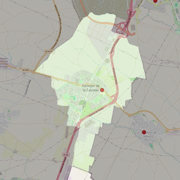

San Cristóbal
- Arciprestazgo
- Parla
- Población
- Torrejón de la Calzada
- Dirección postal
- c/ Iglesia, 15
- Código postal
- 28991
- Extensión
- 8,98 km² (898 ha)
- Teléfono
- 918 169 271
- Correo electrónico
- sancristobal-torrejondelacalzada@diocesisgetafe.es
- Información demográfica
- De la parroquia · De la población (Torrejón de la Calzada) · Del arciprestazgo (Parla)


Descargar mapaLímites según decreto
Los del término municipal
Desarrollos urbanísticos previstos
- Torrejón de la Calzada: Plan Vive (2 promociones): 143 viviendas · en obras o en venta
Las cifras y sus fuentes están en la ficha de cada desarrollo, en la sección «Previsión de desarrollos urbanísticos».